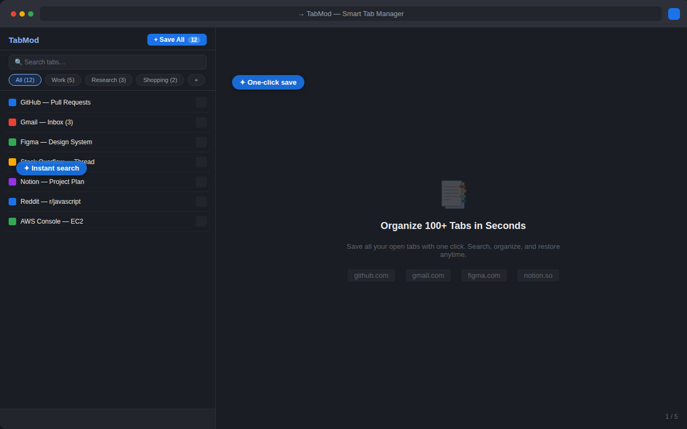
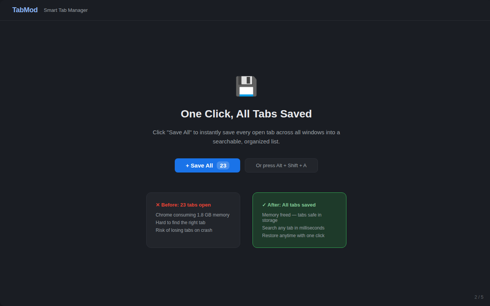
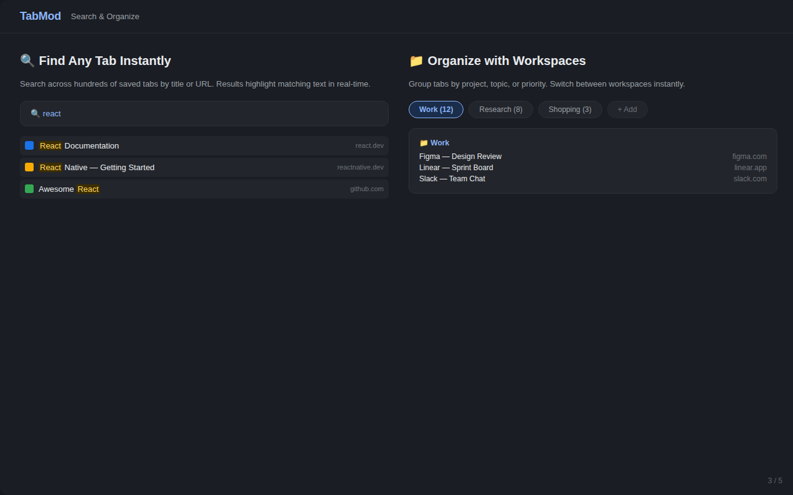
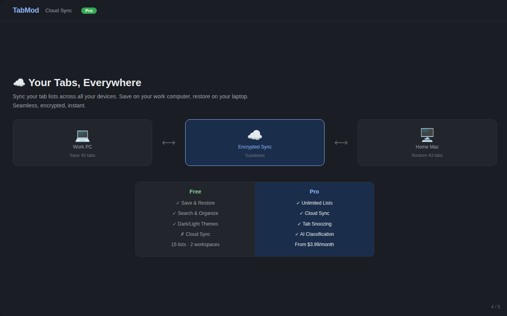
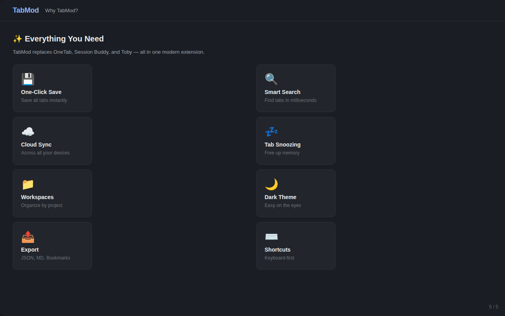

Save every open tab in one click. Search them instantly. Restore any session after a crash. A lightweight, privacy-first OneTab alternative that doesn't strand you on one computer.
◈ Privacy-first: all data stays on your device by default · No account required · No tracking scripts

Most tab managers save your tabs and stop there. TabMod keeps them searchable, organized, and recoverable — without the bloat.
Hit Save All (or Alt+Shift+A) to collect every tab across every window and free the memory instantly. Restore one tab, one list, or everything.
Find any tab you ever saved by title or URL, in milliseconds, with real-time highlighting. Stop scrolling through hundreds of bookmarks.
Group tabs by project — Work, Research, Reading. Sessions survive browser crashes and restarts, so a reboot never costs you a window full of tabs.
Your data leaves with you: JSON, Markdown, or native Chrome bookmarks. No lock-in, no proprietary format.
Follows your system preference, or pin it. Easy on the eyes for late-night research sessions.
Turn it on and your saved tabs follow you between work PC, home laptop, and Mac. Off by default — nothing leaves your computer until you ask.
Real UI, no mockups. Five views: saving, searching, organizing, syncing, and the full feature set.




If you're coming from OneTab or Session Buddy, this is the short version.
| TabMod | OneTab | Session Buddy | |
|---|---|---|---|
| One-click save all | ✓ | ✓ | ✓ |
| Search saved tabs | ✓ | ✗ | ✗ |
| Cross-device sync | ✓ optional | ✗ | ✗ |
| Crash recovery | ✓ | ✗ | ✓ |
| Export JSON / Markdown | ✓ | ✗ (text only) | ✗ (HTML) |
| Light & dark theme | ✓ | ✗ | ✗ |
Comparison based on publicly available product information as of October 2026. Competitor features change — check their current listings.
The extension is free, and the useful parts always will be. A Pro tier with unlimited everything is in development.
Not on sale yet. Install the free version and you'll be notified in-app when Pro launches.
The questions people actually ask before installing a tab manager.
Yes. TabMod does what OneTab does — collapse all your tabs into a saved list with one click — and adds instant search, workspaces, crash recovery, three export formats, and optional cross-device sync.
Completely. Every feature except optional cloud sync runs on your device. Nothing is transmitted anywhere until you explicitly enable sync.
No. There are no analytics scripts, no tracking pixels, and no advertising SDKs. Tab URLs and titles are stored locally in Chrome's sandboxed storage. See the privacy policy for the full detail, including exactly what leaves your device if you enable sync.
TabMod saves sessions as you work. After a crash or restart, open the popup and restore the most recent snapshot — whole windows, individual lists, or single tabs.
The current build is about 44 KB and uses a minimal permission set (tabs, storage, alarms, context menus). No background network calls unless you turn on sync.
A Pro tier (unlimited workspaces, tab snoozing) is in development and not on sale yet. The free version is not time-limited and includes all core features.
Free, 44 KB, privacy-first. Install it in ten seconds and save your first session before the next reboot.
▶ Add to Chrome — Free